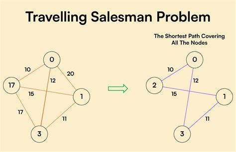

cities = {
"A": (0, 0),
"B": (1, 5),
"C": (5, 2),
"D": (2, 3),
"E": (4, 4)
}
# The starting city is not repeated in the stored route.
route = ("A", "B", "D", "C", "E")Traveling Salesman Problem
Side Project for Extra Credit
Given a set of cities, find the shortest route that visits each city exactly once and returns to its starting city. You will build a brute-force solver: it checks every possible route and keeps the shortest one.
Main concepts: tuples, dictionaries, loops, distances, and permutations. Step 3 introduces recursion, with hints below.

The data and expected result
Represent each city by its coordinates on a plane. Use straight-line Euclidean distances, not road distances.
This example route has a total distance of approximately 18.39, including the return from E to A. It is not the shortest route.
Your final function will return two values: a route as a tuple and its total distance. For example:
route, dist = find_shortest_route(cities)
print(route)
print(f"Distance: {dist:.2f}")One valid optimal output is:
('A', 'C', 'E', 'B', 'D')
Distance: 16.63The same cycle may start in another city or run in the opposite direction. These equivalent routes are also correct. Keep full precision during calculations and round only when displaying results.
Step 1: Compute the distance between two cities
Create compute_distance(city1, city2). Each argument is an (x, y) coordinate tuple.
Calculate and return the Euclidean distance:
\[ d = \sqrt{(x_2-x_1)^2 + (y_2-y_1)^2}. \]
You can calculate a square root with value ** 0.5.
Check that the distance from (0, 0) to (3, 4) is 5, that reversing the points gives the same result, and that a point’s distance from itself is zero.
Step 2: Calculate a complete route’s distance
Create route_distance(route, cities).
routeis a list or tuple of city names, with each city appearing once.citiesis the dictionary of coordinates.
Use compute_distance to add the distances between consecutive cities. Then add the distance from the last city back to the first.
Assume the route contains at least one city and all its names exist in cities. A route with one city has distance zero.
Check the example route above: its distance should round to 18.39. Also test a two-city route using (0, 0) and (3, 4): the round trip has distance 10.
Step 3: Generate permutations
Create generate_permutations(lst), returning a list of lists containing every ordering of the input items. Assume all input items are distinct. Write the function yourself for this step.
For example, generate_permutations(["A", "B"]) should return [["A", "B"], ["B", "A"]], in either order.
The empty input should return [[]]. This represents one possible ordering of zero items: the empty ordering. It is the base case for a recursive solution.
Hint: build permutations recursively
- If the input is empty, return the base case.
- Otherwise, choose each item in turn as the first item.
- Generate the permutations of the remaining items by calling your function again with a shorter list.
- Put the chosen item at the beginning of each smaller permutation and collect the results.
Trace this process with two items before trying three. Avoid changing the original input list while exploring the choices.
Test empty, one-item, two-item, and three-item inputs. Three distinct items should produce six distinct permutations, each containing every original item exactly once.
Step 4: Find the shortest route
Create find_shortest_route(cities).
- Generate all permutations of the city names.
- Calculate the distance of each route using
route_distance. - Keep the shortest route found so far and its distance.
- Return the best route as a tuple, together with its distance.
Assume the dictionary contains at least one city. If several routes have the same minimum distance, return any one of them.
Run your solver on the supplied five cities and compare its result with the optimal distance above. Use the helper below to plot your route.
Plotting helper
You may use this function without recreating or explaining its plotting code.
import matplotlib.pyplot as plt
def plot_cities_route(cities, route):
"""Plot a nonempty route, including the return to its starting city."""
closed_route = list(route) + [route[0]]
x_coords = [cities[city][0] for city in closed_route]
y_coords = [cities[city][1] for city in closed_route]
fig, ax = plt.subplots()
ax.plot(x_coords, y_coords, color="grey", linewidth=1)
ax.scatter(x_coords[:-1], y_coords[:-1], color="blue", zorder=2)
for city, (x, y) in cities.items():
ax.annotate(city, (x, y), xytext=(5, 5), textcoords="offset points")
ax.set_title("Traveling Salesman Route")
ax.set_xlabel("x")
ax.set_ylabel("y")
ax.set_aspect("equal", adjustable="datalim")
ax.grid(alpha=0.3)
plt.show()
plt.close(fig)
# Demonstration with the example route, not the optimal route.
plot_cities_route(cities, route)ModuleNotFoundError: No module named 'matplotlib'Stretch goals (optional)
- Compare the number of routes and execution time for 3, 4, 5, and 6 cities. Supply an additional city for the six-city case. Very short timings can fluctuate, so repeat your measurements. Explain the route-count pattern as well as the timings.
- Fix the starting city and permute only the others. Explain why this reduces repeated work without losing the best cycle.
- Add tolls using the dictionary below. Treat a toll as an extra cost in the same units as distance. Tolls apply in both directions, missing entries mean zero toll, and the return trip must include any applicable toll. For this extension, use single-letter city names. Return the route with the smallest combined cost and that cost.
tolls = {"AB": 2, "BD": 1, "CE": 4}Before you submit
Upload your completed notebook to the Side Projects section on Blackboard before the final exam.
Include the four functions, your tests, the optimal route and distance, and a plot. Explain why checking every route becomes impractical as the number of cities grows. Follow the notebook and AI-use guidance on the Side Projects page.